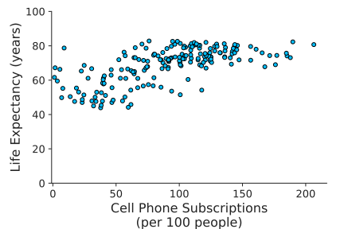
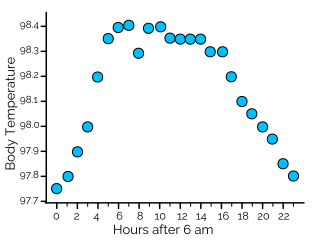
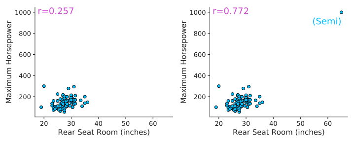
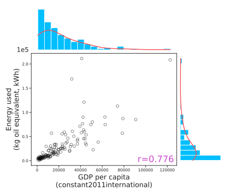
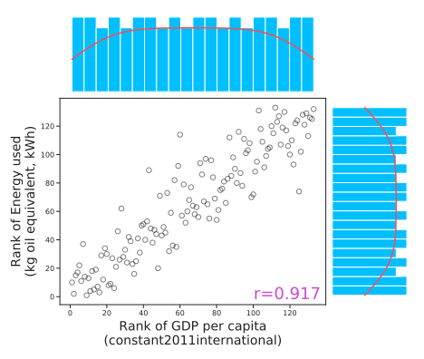
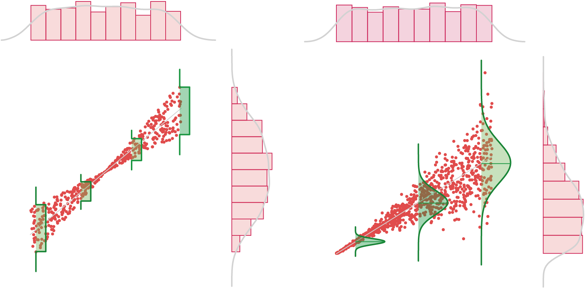

How to visualize relationships between two quantitative variables
How to quantify the strength of a relationship between two quantitative variables
Gallery of problematic usage of correlation
How to visualize relationships between two quantitative variables
How to quantify the strength of a relationship between two quantitative variables
Gallery of problematic usage of correlation
There are 4 majors characteristics to consider when describing a scatterplot:
A positive association means that values of one variable tend to be higher when values of the other variable are higher
A negative association means that values of one variable tend to be lower when values of the other variable are higher
Two variables are not associated if knowing the value of one variable does not give you any information about the value of the other variable
There are 4 majors characteristics to consider when describing a scatterplot:
An association is considered linear if the overall shape of the data point clouds can be describe as a line.
An association is considered non-linear if there are obvious non-linearity in the overall shape of the data points.
There are 4 majors characteristics to consider when describing a scatterplot:
The strength of an association is reflected by how close the data points are to each other while describing the overall linear shape. More local variability in both x and y means less strength.
There are 4 majors characteristics to consider when describing a scatterplot:
Unusual observations (outliers) refer to data points for which one of the variable is much lower or much greater than the same variable for the other data points. This data point will appear to be out of place compared to the other ones.
A scatterplot is the graph of the relationship between two quantitative variables.
If there are explanatory and response variables:
Explanatory variable on the x axis
Response variable on the y axis
The paired data for each case are plotted as a single point on the scatterplot.
Houses for sale in Santa Monica.
Zillow search (05/11/2017)
The numerical scales (and units) are independant, one for each variable.
Note:
A scatterplot can have more than 2 dimensions,
it allows you to build complex visualizations:
Size encoding
Color encoding
Symbol encoding
Ex:
- Point size: Population
- Color: Number of larcenies
(US data, 2005)
In this case, multiple relationships between the different variables can be visually appreciated at the same time.
Note:
Multiple datasets can be displayed
on the same scatterplot.
The different datasets can be differentiated by
color/symbol encoding
All the datasets must have the same variables
(displayed on the same scales)
Visual comparisons can be made.
(Teacher salary sample, $n$=100)
So far, we have dealt with Categorical & Quantitative variables, whether it was for making inferences from one sample or comparing 2 groups. When comparing two groups the explanatory variable has thus far been categorical.
Categorical ($\hat{p}$)
Quantitative ($\bar{x}$)
Categorical
Quantitative
Categorical ($\hat{p}_1-\hat{p}_2$)
Quantitative ($\bar{x}_1-\bar{x}_2$)
Now let's explore the relationship between two quantitative variables, where both the explanatory and response variables are quantitative.
Previously, we measured the association of two samples (variables) by asking if the two samples were the same (or came from the same underlying distribution).
With 2 quantitative variables, we can measure the degree of association between them.
We call this correlation, and we can give it a value between $-1$ and $1$ that quantifies its strength.
The closer to $\phantom{}\pm1$, the stronger the linear association.
In statistics, dependence (or association) is any statistical relationship, whether causal or not, between two (random) variables.
When the association is linear, we often refer to such an association as correlation.
Statistic of interest:
The numerical statistic to measure the strength and direction of linear association between two quantitative variables is the correlation coefficient.
sample correlation coefficient: $r$
population correlation coefficient: $\rho$ ("rho")
A Positive Correlation is a positive linear relationship means that as one variable increases, the other variable also increases.
A Negative Correlation is a negative linear relationship means that as one variable increases, the other variable decreases.
No Correlation is a non-linear relationship means that as one variable increases, the other variable does not have a consistent pattern of increase or decrease.
The Pearson correlation coefficient formula:
$r=\frac{\sum_{n=1}^{n}(x_i-\bar{x})(y_i-\bar{y})}{\sqrt{\sum_{n=1}^{n}(x_i-\bar{x})^2}\sqrt{\sum_{n=1}^{n}(y_i-\bar{y})^2}}$
This correlation formula can be expressed as:
$r=\frac{1}{n-1}\sum_{n=1}^{n} (\frac{x_i-\bar{x}}{s_x})(\frac{y_i-\bar{y}}{s_y})$
with $s_x=\sqrt{\frac{\sum_{n=1}^{n}(x_i-\bar{x})^2}{n-1}}$ (and similar for $y$)
Essentially, the correlation calculation involves converting all values for both variables to z-scores, and can be considered as the mean of the products of the standard scores.
The correlation coefficiant
Reflects the linear strength and direction of a linear relationship
Does not reflect the slope of the relationship
Does not reflect many aspects of nonlinear relationships
The Pearson correlation coefficient formula:
$r=\frac{\sum_{n=1}^{n}(x_i-\bar{x})(y_i-\bar{y})}{\sqrt{\sum_{n=1}^{n}(x_i-\bar{x})^2}\sqrt{\sum_{n=1}^{n}(y_i-\bar{y})^2}}$
$r$ is the standardized covariance between samples $X$ and $Y$.
$s_x^2 = \frac{\sum (x_i - \bar{x})^2}{n-1}$ $\phantom{}\rightarrow\frac{1}{n-1}\sum_{i=1}^{n}(x_i - \bar{x})(x_i - \bar{x})$ $=s_{xx}$
Substitute one $X$ for $Y$ to get covariance:
$s_{xy} =\frac{1}{n-1}\sum\phantom{}$ $\left( x_i - \bar{x}\right)$ $\left( y_i - \bar{y}\right)$
Standardize $s_{xy}$, to put it on the scale of $\phantom{}\pm 1$ by the product of the samples standard deviation.
$r=\sum \frac{s_{xy}}{s_xs_y}$
Essentially, the correlation calculation involves converting all values for both variables to z-scores, and can be considered as the mean of the products of the standard scores.
Pearson's $r$ assumes that the data is bivariate normal.
This is a strong assumption, $r$ is married to the normal distribution.
If the data is not normal, $r$ is not a good measure of association.
Spearman's correlation is used when assessing the strength and direction of a monotonic relationship between two variables. It is particularly useful when:
Rank each variable, then calculate Pearson's $r$ on the ranks.
For each value in a variable, its rank represents its position when all values are sorted in ascending order. In cases where multiple values are identical (ties), each is assigned the average of their potential ranks.
A hospital wanted to conduct a quality of service assessment across two of their lead cardiologists. To conduct their assessment, they asked the two doctors to measure the resting cardiac output of 23 of the hospital staff.
The two doctors, Observer A and Observer B recorded the data shown in the table.
The hospital wants to know, is there a statistically significant correlation between the observers?
Management flows down the requirement that in order to consider them significant, correlation shall be tested at the $\alpha=0.05$ level, i.e. $p(r)<\alpha$.
What are our statistical hypotheses?
$H_0:\, r = \rho$, $H_a:\, r \neq \rho$
Where $\rho$ is the zero-correlation null hypothesis value.
| Patient | Observer A | Observer B |
|---|---|---|
| 1 | 4.8 | 5.8 |
| 2 | 5.6 | 6.1 |
| 3 | 6 | 7.7 |
| 4 | 6.4 | 7.8 |
| 5 | 6.5 | 7.6 |
| 6 | 6.6 | 8.1 |
| 7 | 6.8 | 8 |
| 8 | 7 | 8.1 |
| 9 | 7 | 6.6 |
| 10 | 7.2 | 8.1 |
| 11 | 7.4 | 9.5 |
| 12 | 7.6 | 9.6 |
| 13 | 7.7 | 8.5 |
| 14 | 7.7 | 9.5 |
| 15 | 8.2 | 9.1 |
| 16 | 8.2 | 10 |
| 17 | 8.3 | 9.1 |
| 18 | 8.5 | 10.8 |
| 19 | 9.3 | 11.5 |
| 20 | 10.2 | 11.5 |
| 21 | 10.4 | 11.2 |
| 22 | 10.6 | 11.5 |
| 23 | 11.4 | 12 |
Step 1: Visualize the data!
Step 2: Calculate Pearson's correlation coefficient: $r=\frac{s_{AB}}{S_AS_B}=0.935$.
| Patient | Observer A | Observer B |
|---|---|---|
| 1 | 4.8 | 5.8 |
| 2 | 5.6 | 6.1 |
| 3 | 6 | 7.7 |
| 4 | 6.4 | 7.8 |
| 5 | 6.5 | 7.6 |
| 6 | 6.6 | 8.1 |
| 7 | 6.8 | 8 |
| 8 | 7 | 8.1 |
| 9 | 7 | 6.6 |
| 10 | 7.2 | 8.1 |
| 11 | 7.4 | 9.5 |
| 12 | 7.6 | 9.6 |
| 13 | 7.7 | 8.5 |
| 14 | 7.7 | 9.5 |
| 15 | 8.2 | 9.1 |
| 16 | 8.2 | 10 |
| 17 | 8.3 | 9.1 |
| 18 | 8.5 | 10.8 |
| 19 | 9.3 | 11.5 |
| 20 | 10.2 | 11.5 |
| 21 | 10.4 | 11.2 |
| 22 | 10.6 | 11.5 |
| 23 | 11.4 | 12 |
Step 3: Calculate a 95% confidence interval for the correlation coefficient by rasampling the rows of the table and computing 10,000 resampled correlation coefficients..
| Patient | Observer A | Observer B |
|---|---|---|
| 17 | 8.3 | 9.1 |
| 3 | 6 | 7.7 |
| 21 | 10.4 | 11.2 |
| 8 | 7 | 8.1 |
| 14 | 7.7 | 9.5 |
| 6 | 6.6 | 8.1 |
| 19 | 9.3 | 11.5 |
| 11 | 7.4 | 9.5 |
| 2 | 5.6 | 6.1 |
| 23 | 11.4 | 12 |
| 13 | 7.7 | 8.5 |
| 5 | 6.5 | 7.6 |
| 16 | 8.2 | 10 |
| 9 | 7 | 6.6 |
| 22 | 10.6 | 11.5 |
| 1 | 4.8 | 5.8 |
| 18 | 8.5 | 10.8 |
| 7 | 6.8 | 8 |
| 12 | 7.6 | 9.6 |
| 4 | 6.4 | 7.8 |
| 20 | 10.2 | 11.5 |
| 15 | 8.2 | 9.1 |
| 10 | 7.2 | 8.1 |
Step 3: Calculate a 95% confidence interval for the correlation coefficient by rasampling the rows of the table and computing 10,000 resampled correlation coefficients..
| Patient | Observer A | Observer B |
|---|---|---|
| 13 | 7.7 | 8.5 |
| 5 | 6.5 | 7.6 |
| 21 | 10.4 | 11.2 |
| 8 | 7 | 8.1 |
| 17 | 8.3 | 9.1 |
| 2 | 5.6 | 6.1 |
| 11 | 7.4 | 9.5 |
| 19 | 9.3 | 11.5 |
| 3 | 6 | 7.7 |
| 23 | 11.4 | 12 |
| 6 | 6.6 | 8.1 |
| 15 | 8.2 | 9.1 |
| 1 | 4.8 | 5.8 |
| 10 | 7.2 | 8.1 |
| 22 | 10.6 | 11.5 |
| 4 | 6.4 | 7.8 |
| 16 | 8.2 | 10 |
| 9 | 7 | 6.6 |
| 20 | 10.2 | 11.5 |
| 7 | 6.8 | 8 |
| 14 | 7.7 | 9.5 |
| 12 | 7.6 | 9.6 |
| 18 | 8.5 | 10.8 |
Step 4: Calculate the Null hypothesis by breaking the pairs of data, and resampling 10,000 times.
| Patient | Observer A | Observer B |
|---|---|---|
| 1 | 4.8 | 5.8 |
| 2 | 5.6 | 6.1 |
| 3 | 6 | 7.7 |
| 4 | 6.4 | 7.8 |
| 5 | 6.5 | 7.6 |
| 6 | 6.6 | 8.1 |
| 7 | 6.8 | 8 |
| 8 | 7 | 8.1 |
| 9 | 7 | 6.6 |
| 10 | 7.2 | 8.1 |
| 11 | 7.4 | 9.5 |
| 12 | 7.6 | 9.6 |
| 13 | 7.7 | 8.5 |
| 14 | 7.7 | 9.5 |
| 15 | 8.2 | 9.1 |
| 16 | 8.2 | 10 |
| 17 | 8.3 | 9.1 |
| 18 | 8.5 | 10.8 |
| 19 | 9.3 | 11.5 |
| 20 | 10.2 | 11.5 |
| 21 | 10.4 | 11.2 |
| 22 | 10.6 | 11.5 |
| 23 | 11.4 | 12 |
Step 4: Calculate the Null hypothesis by breaking the pairs of data, and resampling 10,000 times.
| Patient | Observer A | Observer B |
|---|---|---|
| 1 | 4.8 | 11.5 |
| 2 | 5.6 | 9.1 |
| 3 | 6 | 8.1 |
| 4 | 6.4 | 12 |
| 5 | 6.5 | 9.5 |
| 6 | 6.6 | 8.5 |
| 7 | 6.8 | 7.7 |
| 8 | 7 | 11.2 |
| 9 | 7 | 10.8 |
| 10 | 7.2 | 7.8 |
| 11 | 7.4 | 9.6 |
| 12 | 7.6 | 6.1 |
| 13 | 7.7 | 11.5 |
| 14 | 7.7 | 8 |
| 15 | 8.2 | 7.6 |
| 16 | 8.2 | 5.8 |
| 17 | 8.3 | 9.1 |
| 18 | 8.5 | 6.6 |
| 19 | 9.3 | 10 |
| 20 | 10.2 | 9.5 |
| 21 | 10.4 | 8.1 |
| 22 | 10.6 | 11.5 |
| 23 | 11.4 | 9.1 |
Step 4: Calculate the Null hypothesis by breaking the pairs of data, and resampling 10,000 times and recomputing Pearson's $r$.
Step 5: Calculate the p-value by determining the number of Null $r$ values are more extreme than our observed r.
| Patient | Observer A | Observer B |
|---|---|---|
| 1 | 4.8 | 11.2 |
| 2 | 5.6 | 8.5 |
| 3 | 6 | 9.5 |
| 4 | 6.4 | 11.5 |
| 5 | 6.5 | 8.1 |
| 6 | 6.6 | 7.7 |
| 7 | 6.8 | 9.1 |
| 8 | 7 | 7.8 |
| 9 | 7 | 12 |
| 10 | 7.2 | 10.8 |
| 11 | 7.4 | 6.1 |
| 12 | 7.6 | 7.6 |
| 13 | 7.7 | 8 |
| 14 | 7.7 | 11.5 |
| 15 | 8.2 | 9.6 |
| 16 | 8.2 | 6.6 |
| 17 | 8.3 | 5.8 |
| 18 | 8.5 | 8.1 |
| 19 | 9.3 | 9.1 |
| 20 | 10.2 | 10 |
| 21 | 10.4 | 11.5 |
| 22 | 10.6 | 8.1 |
| 23 | 11.4 | 9.5 |

Forensic analysis: Most people are not accustomed to looking at foot length, so describing the suspect as having a foot of 10.5inches long would probably not help find the suspect. It would be far more useful to tell people to look for a suspect who is of a certain height.
The accuracy of this prediction would depend on the size of the correlation between foot length and height

Anthropology: Body proportions and the dimensions of various body segments, including the long bones of their limbs and the bones of the foot and hand have been used to estimate stature.
The accuracy of this prediction would depend on the size of the correlation between foot length and height
Because the correlation coefficient only gives information about the direction and strength of an association, we cannot use it directly to get information of someone's height from their footprint.
If we decide the association is linear (strong $r$), it is useful to develop a mathematical model of that association.
The process of fitting a line to a set of data is called linear regression, and the line of best fit is called the regression line, which is the line that gets as close as possible to all of the data points.
We can use the regression line to give a predicted value of the response variable, based on a given value of the explanatory variable.
The commonly accepted ranges for interpreting the correlation coefficient are as follow:
| Correlation (absolute value) |
Strength of association | What this means |
| 0.7 to 1.0 | Strong |
The points will appear to be nearly a straight line |
| 0.3 to 0.7 | Moderate | When looking at the graph the increasing/decreasing pattern will be clear, but it won't be nearly a line |
| 0.1 to 0.3 | Weak | With some effort you will be able to see a slightly increasing/decreasing pattern |
| 0 to 0.1 | None | No discernible increasing/decreasing pattern |
Correlation coefficient ($r$)
A strong positive or negative correlation does not (necessarily) imply a cause and effect relationship between the two variables.
A correlation near zero does not (necessarily) mean that the two variables are not associated, since the correlation measures only the strength of a linear relationship.
Correlation can be heavily influenced by outliers. Always plot your data!
Pearson correlation doesn't give reliable results if the variables are not normally distributed.
We can use the ranks of each of the variables to transform the data into an appropriate-looking space and then use Pearson's correlation on those ranks (Spearman's Correlation)
Pearson's correlation

Rank
Spearman's correlation
A dataset is homoscedastic if the variance at any given portion is the same as all others, i.e. constant.

A dataset is heteroscedastic if the variance at any given portion is different from all others, i.e. variable.
Because correlation gives an information about the strength of an association (how close are the data point to the imaginary line), if the dataset is heteroscedastic then correlation won't give you a very representative result.